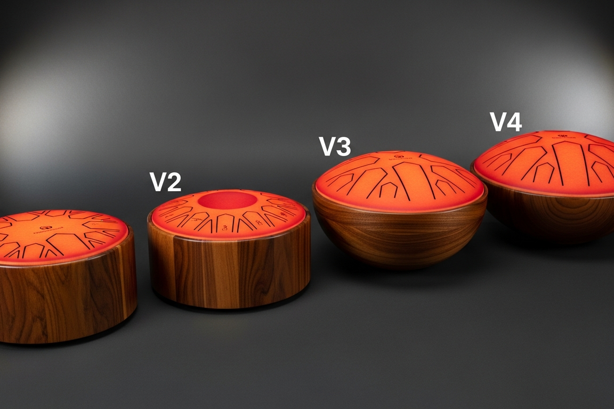
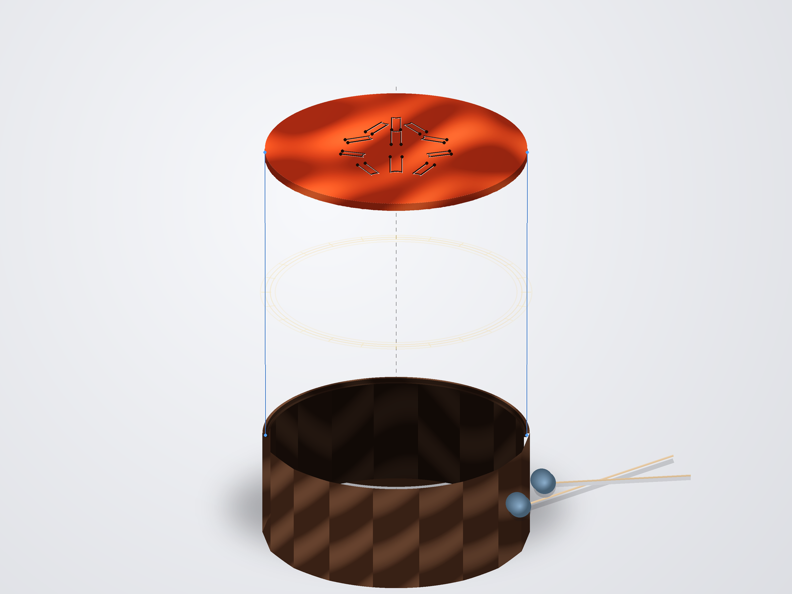
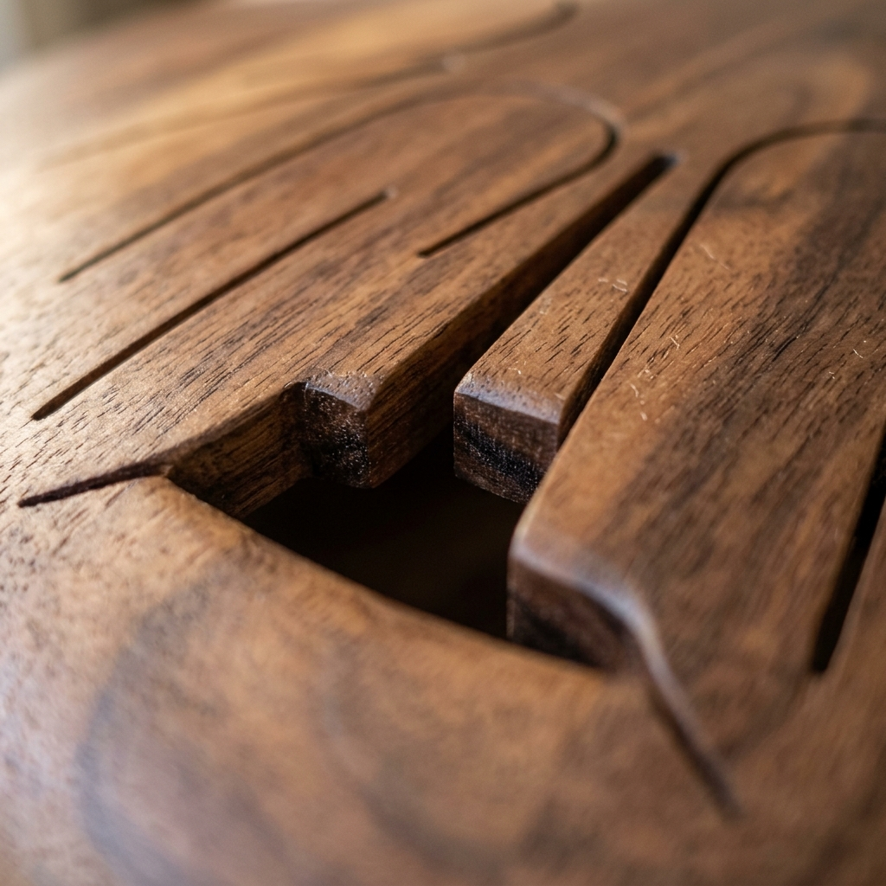

Current gates
Images



Present packet evidence
| Artifact | Use |
|---|---|
wood-shell-tongue-drum-design-table.xlsx | Parametric planning source, not measured shop release. |
design.md | Governing model and V1 Standard first-prototype rationale. |
validation.csv | Measurement protocol with empty measured-value fields. |
drawings/00-hero-v1-standard.svg | Derived preview for review, not DXF/CAD authority. |
Deferred authority
- SolidWorks/STEP/STL CAD waits for Phase 1 calibration.
- DXF and G-code wait for calibrated CAD/CAM.
- Concept sheets and deck visuals do not control tongue lengths, gu ports, or toolpaths.
- Repeatable packet claims wait for measured tuning, shell seal, and seasonal drift data.